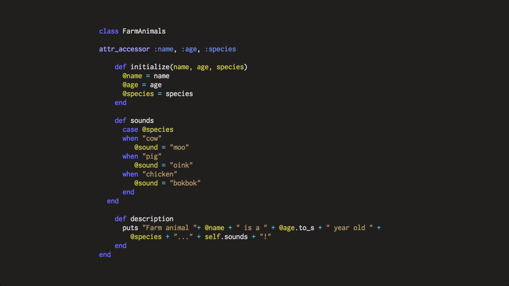
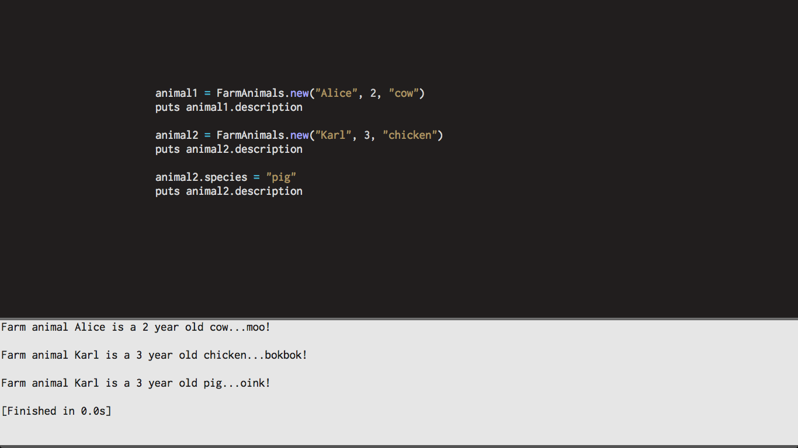

Today I am going to talk a bit about Ruby classes.
A class is basically a blueprint, or model, for creating new objects. Each object created by a particular class will share, or inherit, its assigned properties and methods.
To help illustrate, I've written a silly class about farm animals.
The class is initialized to accept 3 arguments: name, age, and species. In the commonly used initialized method, each argument is assigned to an instance variable. These are denoted by the @ symbol preceding the variable name. Instance variables are visible only within the class and objects created by the class. Without the @ symbol, we would not be able to use these variables in the different methods throughout the class.
You'll notice the "attr_accessor" at the top. This allows access to those variables throughout the code. More on this later.
In the sounds method, I illustrate how the instance variables can be used throughout the different methods in the class. Using a case statement, I create a new instance variable, @sound, with a different sound depending on the species passed in as an argument.
Finally, in the description method, a string is printed to the screen with the values from the previous class methods passed in.
Let's test it out.
When we create a new class using FarmAnimals.new(name, age, species), it creates a new instance of a FarmAnimal object.
animal1 and animal2 are variables that point to these objects.
We can print the description for each FarmAnimal object by calling the description method on the object variable:
puts animal2.description
Now back to attr_accessor! Notice how I changed the species of animal2 from chicken to pig, and the description was updated to reflect these changes? Try running the code without attr_accessor - it won't work! attr_accessor allows you "access," if you will, to make such changes. Oink!